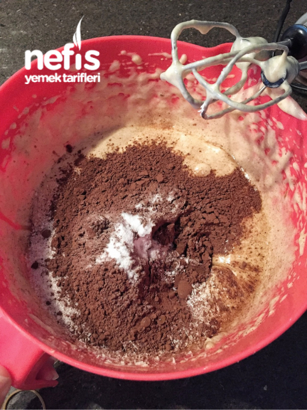
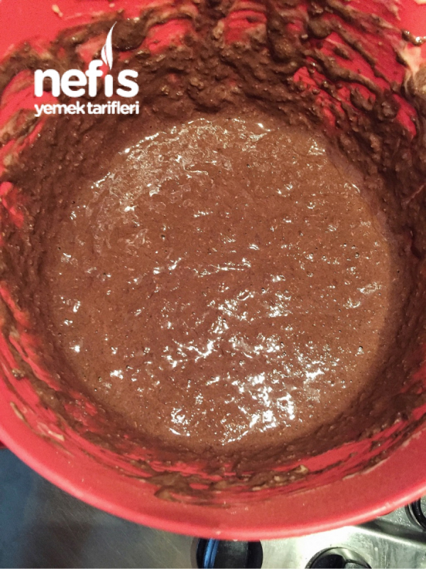
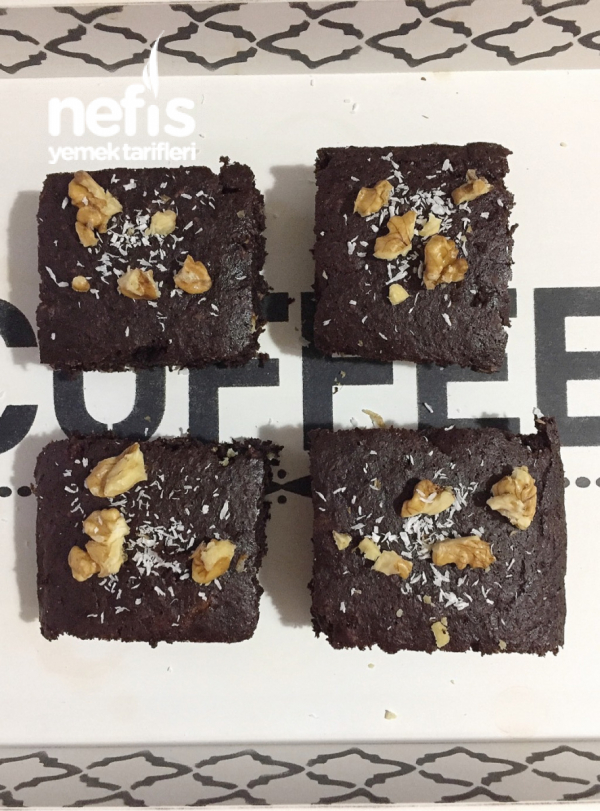

Deneyen herkese afiyet olsun
Malzemeler:
3 yumurta
3 adet muz
8 yemek kaşığı hindistan cevizi
4 yemek kaşığı kakao
1 çay kaşığı karbonat
2 yemek kaşığı bal
Yapılışı:
| Muzlarımızı bir kaba rendeleyelim. | |
| Yumurtayla iyice köpürene kadar mikserle çırpalım. |  |
| Geri kalan malzemelerin hepsini de ilave edip, biraz daha karıştıralım. |  |
| Küçük dörtgen borcama dökelim ve önceden ısıtılmış 180 derecelik fırında 25 dakika pişirelim. Deneyen herkese afiyet olsun |
 |